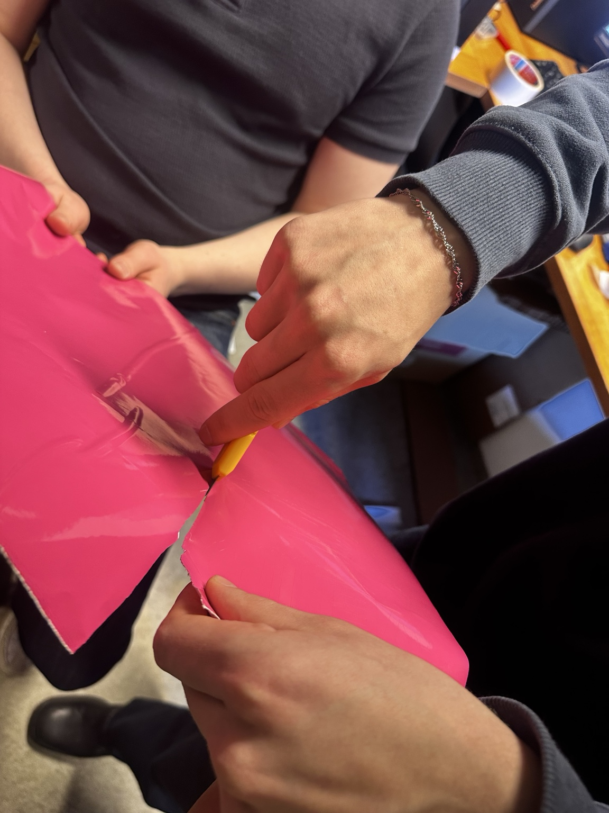
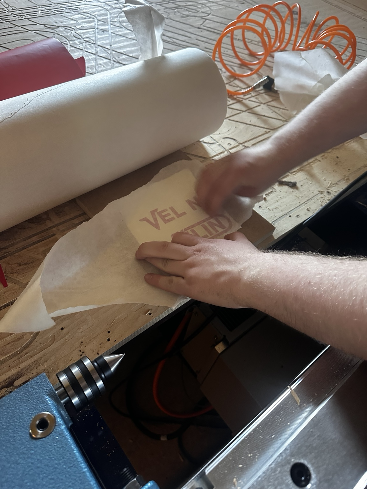
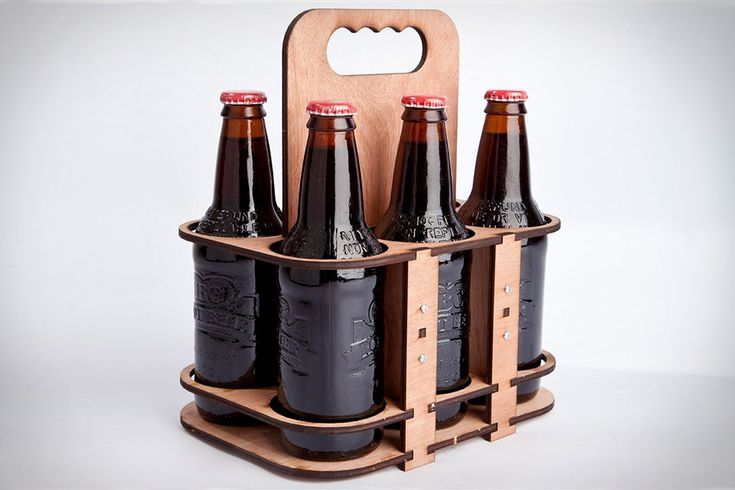
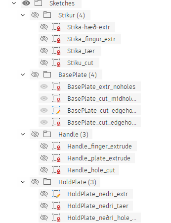
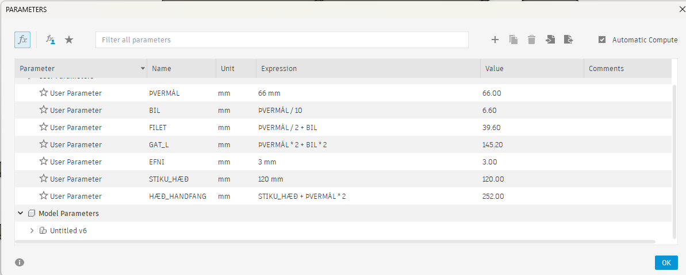
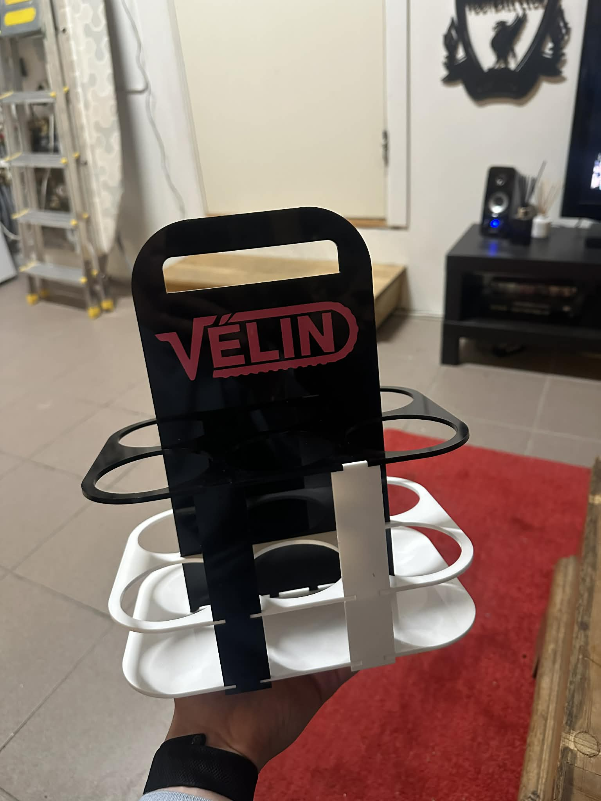
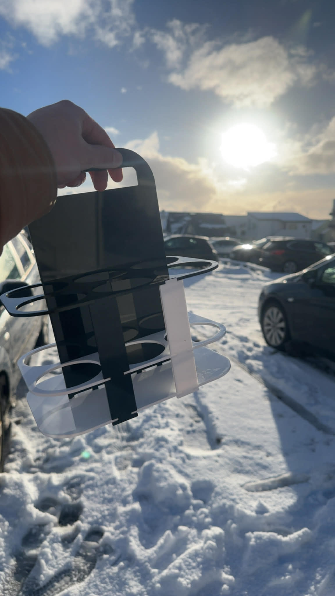
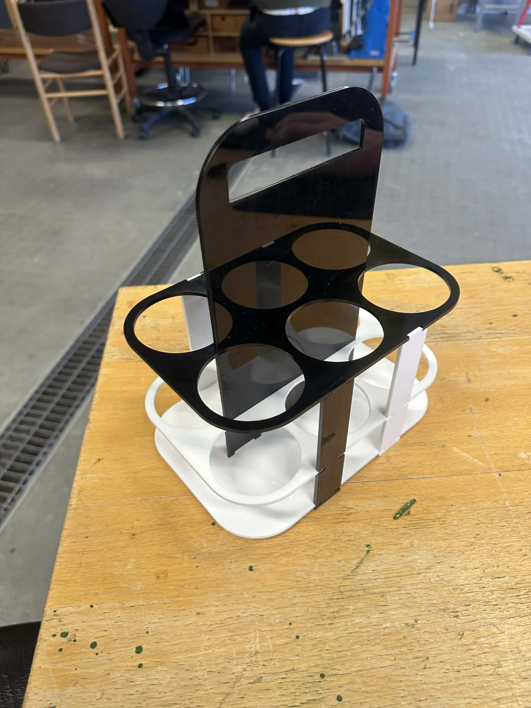

Hönnunarferli
Vínylskurður
Við byrjun verkefnisins ákvað ég að skemmtilegt væri að samtvinna vínylskurðinn með geislaskurðinum. Ég lagði hausinn í bleyti og upp spratt sú hugdetta að gera eitthvað tengt besta nemendafélagi Háskóla Íslands, Vélina. Lengi hefur verið þekkt að Vélin er stærsta djammfélag Íslands og þótti því hentugt að gera kippu í geislaskurði og nota hið fallega myndmerki Vélarinnar í vínylskurði sem skraut á kippuna.
Sem forseti Vélarinnar var lauflétt að komast yfir myndmerki Vélarinnar á .png-formi og stinga því inn í Inkscape. Ég nýtti mér kennslumyndband Hafliða til þess að undirbúa það fyrir vínylskerann og mætti með það í VR3 í skurð.
.png)
Með aðstoð Magga gekk þetta eins og í draumi og eftir um það bil 30 mínútur var kominn gullfallegur bleikur (hex-kóði: #FF69BF) límmiði af Vélarmerkinu. Hægt er að sjá myndir af mér að skera hann út hér fyrir neðan og einnig fyrri tilraun sem heppnaðist ekki alveg jafnvel — en límmiði í allri sinni dýrð verður sýndur aðeins neðar þegar búið er að fara yfir parametrísku hönnunina, svo örvæntið ekki.

Að skera út vínyl.

Að setja pappírinn yfir.
Parametrísk hönnun
Þar sem ég var búinn að ákveða að hanna og smíða kippu fór ég á veraldarvefinn til að leita að innblæstri og skoða hvernig aðrir hafa leyst svipað verkefni. Ég fann margar áhugaverðar útfærslur með mismunandi áherslum á burðarþol, festingar og útlit, sem hjálpaði mér að móta mínar eigin hönnunarforsendur. Að lokum ákvað ég að gera lausn í svipuðum anda og The 6 Packer, en teiknaði samt allt frá grunni og aðlagaði hönnunina að mínu framleiðsluferli og þeim málum og festingum sem ég vildi nota.

Hins vegar þurfti ég að finna leið til þess að sleppa þessum skrúfum og finna hina réttu parametra; það var auðveldara sagt en gert. Ég ákvað að ég vildi að allt myndi breytast út frá þremur parametrum: þvermáli flösku, hæð flöskubúks og efnisþykkt. Með þessu væri hægt að aðlaga kippuna að flestum stærðum á flöskum. Eftir um það bil 10 tíma af vinnu var ég kominn á góðan stað, búinn að skilgreina ágæta parametra og teikna nokkra parta, en þá kom „bobb í bátinn“. Vegna reynsluskorts míns á parametrískri hönnun og Fusion var fyrsta hönnunin ekki upp á marga fiska; sketchar voru illa skilgreindir og vinnubrögð í heild léleg. Þess vegna ákvað ég að byrja alveg upp á nýtt — en í þetta skipti ætlaði ég að vera skipulagður. Fyrsta skrefið var að skíra hvert einasta sketch og hér fyrir neðan er hægt að sjá hvernig ég gerði það.

Ég skírði þetta allt á ensku svo íslenskir stafir væru ekki að flækjast fyrir. Næsta skref var að skilgreina öll sketch eins ýtarlega og vandlega og hægt er; til þess að gera það þarf að hafa skýra og góða parametra, og þetta eru þeir sem ég hannaði.

Til að staðfesta staðlaðar stærðir á bjórflöskum og dósum studdist ég við þessa heimild: Beer Bottle Dimensions (The Cary Company) .
Eins og sést hér fyrir ofan eru flestir parametrar tengdir þvermálinu og aðeins einn tengdur stikuhæðinni; þetta þýðir að nánast öll hönnunin ræðst af einni stærð.
3D-módel kippunnar
Hannað í Autodesk Fusion 360
Hér má sjá 3D-módelið af hönnuninni sem kom frábærlega út. Festingarnar í kippunni eru hannaðar sem press-fit tengingar sem gera kleift að setja hana saman án skrúfa eða líms. Hver plata hefur tappa (tabs) og samsvarandi raufar (slots) sem leiða partana sjálfvirkt í rétta stöðu og halda þeim stöðugum í notkun. Þéttleiki festingarinnar ræðst af kerf-stillingu lasersins og valinni tolerans; við kvörðun var kerf mælt og raufbreiddir aðlagaðar þannig að núningsmótstaða verði nægileg. Festingarnar dreifa álagi vel með því að hafa margar tengingar á hverri hlið og styðja þannig bæði lóðrétt álag frá dósum og hliðarálag við burð. Þetta eykur stífleika og minnkar líkur á lausu fit-i.
Kerf
Áður en ég gat farið með þetta í geislaskerann þurfti ég að gera eins konar kerf-próf. Ég framkvæmdi kerf-próf til að stilla press-fit samsetningu fyrir laser-skorinn bjórhaldara. Prófið fólst í því að skera út prófbit(a) þar sem raufir og bilin voru teiknuð með fyrirfram ákveðnum víddum í kringum nafnþykkt efnisins. Með því að prófa samsetningu og finna hvaða rauf gaf bestu passninguna (þétt en samt samsetjanlegt með handafli) var hægt að áætla raunverulega skurðbreidd lasersins, þ.e. kerf. Þar sem laserinn fjarlægir efni sitt hvoru megin við skurðlínuna, má nálga kerf út frá muninum á efnisþykkt og þeirri rauf sem reyndist best. Fyrst framkvæmdi ég þetta fyrir 5 mm efni og fékk kerf-gildið 0,18 mm, sem var notað til að stilla allar raufir og festingar í hönnuninni. Síðar kláraðist 5 mm efnið, og þegar ég fékk 5 mm plötur frá öðrum aðila mældist kerfið 0,19 mm, sem sýnir að kerf getur breyst milli efnislota og undirstrikar mikilvægi kvörðunar.
Geislaskurður
Eftir að kerfið var komið setti ég Fusion-skrána inn í Inkscape þar sem ég gat breytt þessu í SVG-skrá og skorið. Ég byrjaði á því að prófa nokkrar litlar festingar sem smellpössuðu með völdu kerfi, eins og sést á myndinni hér fyrir neðan.

Eins og sést passaði þetta vel, en hins vegar brotnaði ein festing sem var einfaldlega út af stærð festingarinnar. Næsta skref var bara að skera allt út og heppnaðist það vel, en nokkrir partar þurftu að vera skornir tvisvar vegna smávægilegrar færslu á efninu. Eftir tilraun tvö var þetta orðið fullkomið.



Hér má sjá kippuna samsetta með límmiðanum á og heppnaðist þetta mjög vel. Kippan er búin til úr svörtum og hvítum 3 mm akríl — í „zebra“-stíl eins og ég kýs að kalla það — og hentar öllum sem mæta oft á BYOB (bring your own booze) viðburði.
Lærdómur
Í þessu press-fit verkefni lærði ég hve ótrúlega mikilvægt það er að temja sér góð vinnubrögð við hönnun. Þegar unnið er með toleransa og samsetningu án skrúfa eða líms skiptir miklu að vera skipulagður, halda góðri útgáfustjórnun og vinna kerfisbundið í litlum skrefum. Ég fann líka að það borgar sig að taka sér tíma, prófa, mæla og endurtaka í stað þess að flýta sér í „lokaútgáfu“ of snemma. Í nokkrum tilvikum var einfaldlega best að stíga skref til baka og byrja alveg upp á nýtt — þá varð lausnin bæði hreinni, sterkari og auðveldari í framleiðslu. Þetta kenndi mér að góð hönnun snýst ekki bara um hugmyndina sjálfa, heldur líka um ferlið: agaða vinnu, skýrar forsendur og vilja til að endurhanna þar til útkoman er rétt.